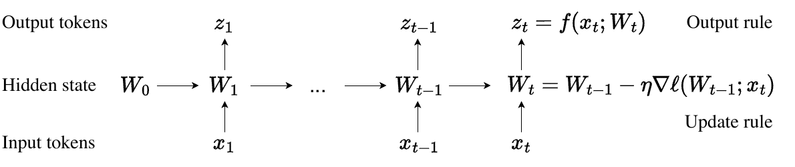
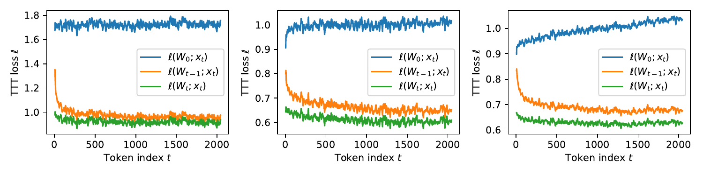
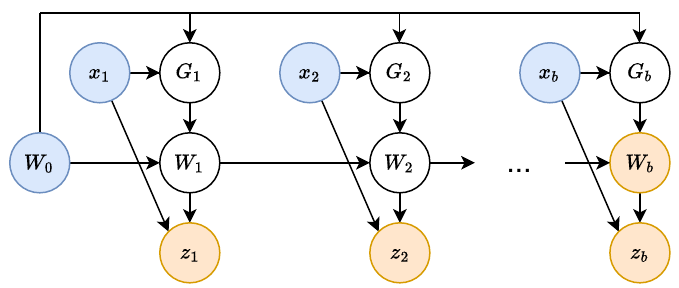
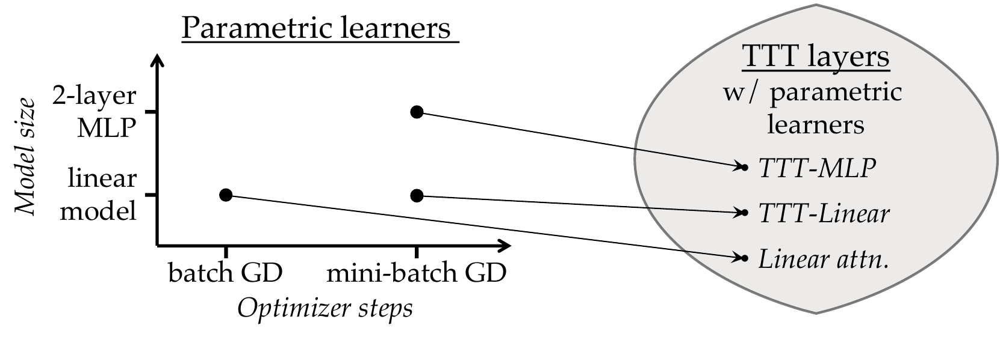
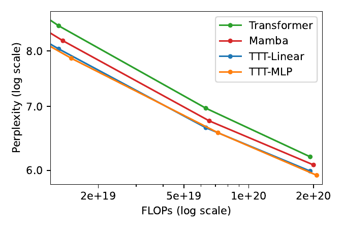
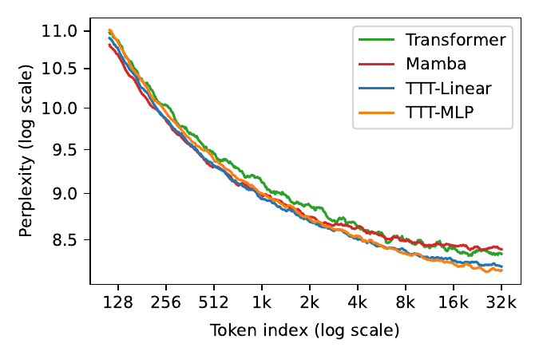
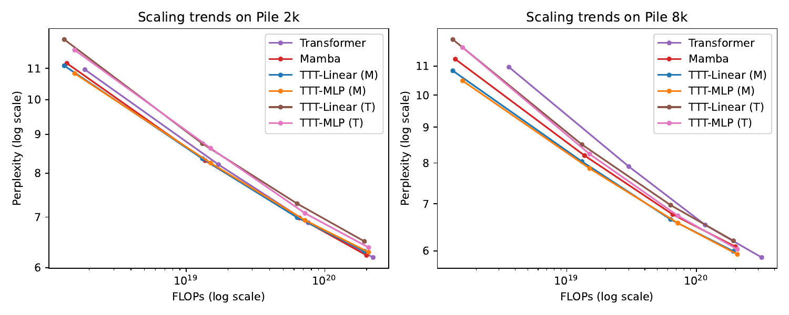
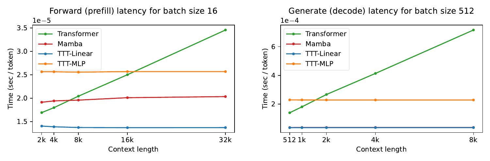

An interactive explainer
Learning to (Learn at Test Time)
Recurrent networks promise what Transformers cannot: linear-time sequence modelling, a fixed-size memory, constant cost per token. They have never delivered in long context — a fixed-size hidden state is too blunt an instrument to compress thousands of tokens well. This paper's move: make the hidden state itself a machine learning model, and make the update rule a step of self-supervised gradient descent. Reading a sequence becomes training a model. Because the training happens even on test sequences, the layers are called Test-Time Training layers — and they let an RNN keep getting better with more context, the way only attention used to.

1. A third option for memory
For the better part of a decade, sequence modelling has been a contest between two ways of remembering. Attention keeps every token it has ever seen and re-reads them all to predict the next one — precise, but its cost per token grows with the length of the context. Recurrence crushes all of history into a single fixed-size hidden state that it overwrites step by step — cheap and constant-cost, but lossy.
In 2020, the OpenAI scaling-law paper found that LSTMs could not scale like Transformers and could not really exploit long context. Four years later this paper re-runs that test with a modern RNN, Mamba — and finds genuine progress, but also the same old wall. Tokens late in a sequence ought to be easier to predict, because they have more context to lean on. For a Transformer, perplexity keeps falling token after token, all the way through a 32k window. For Mamba, the same curve flattens out after about 16k tokens. The extra context arrives, and the RNN cannot use it.
This is an awkward bind. The whole point of an RNN is linear-time cost, an advantage that only matters once context is long. But once context is long, the fixed-size hidden state runs out of room. Compressing thousands — eventually millions — of tokens into a state of fixed size demands a genuinely good compression heuristic: something that can find the structure and the connections buried in all that history.
The paper's starting observation is that we already have such a heuristic, and use it every day. Self-supervised learning compresses an enormous training set into the weights of a model — an LLM is exactly that, the internet squeezed into a few billion parameters, with enough understanding of the connections between facts to reason about new ones. So why not use the same trick inside a sequence layer: make the hidden state a model, and compress the context into it by training.
2. Every sequence layer is a hidden state
To see where the new layer fits, it helps to put the existing ones in a single frame. Every sequence modelling layer — every autoregressive map from one sequence to another — can be described by three pieces: an initial state, an update rule that folds the next token into the state, and an output rule that reads an output token off the state.
| Layer | Hidden state | Update rule | Output rule | Cost / token |
|---|---|---|---|---|
| RNN | a fixed-size vector $s_t$ | $s_t = \sigma(\theta_{ss} s_{t-1} + \theta_{sx} x_t)$ | $z_t = \theta_{zs} s_t + \theta_{zx} x_t$ | $O(1)$ |
| Self-attention | a growing list (the KV cache) | append $(k_t, v_t)$ to the list | $z_t = V_t\,\texttt{softmax}(K_t^\top q_t)$ | $O(t)$ |
| TTT | weights $W_t$ of a model $f$ | $W_t = W_{t-1} - \eta\,\nabla\ell(W_{t-1}; x_t)$ | $z_t = f(x_t; W_t)$ | $O(1)$ |
Read down the table and the trade-off is stark. An RNN's hidden state is fixed in size, so its update and output both take constant time — but that same fixed size caps how much it can really remember. Self-attention's hidden state is the Key-Value cache, a list that grows with every token; it stores the past with no compression at all, which is why it is so expressive and why scanning it costs more with every token.
The TTT layer sits in the same fixed-size, constant-cost column as the RNN. The difference is what lives in that fixed-size slot. An RNN stores a vector. A TTT layer stores the weights of a model — and a model is a far richer container for structure than a vector of the same size.
3. Make the hidden state a model
Here is the central move, stated plainly. The hidden state $s_t$ is redefined to be $W_t$, the weights of a small model $f$ — a linear map, a little MLP, anything differentiable. The two rules follow directly. The output rule is just the model's prediction on the current token:
$$ z_t = f(x_t;\, W_t). $$
And the update rule is one step of gradient descent on a self-supervised loss $\ell$, with learning rate $\eta$:
$$ W_t = W_{t-1} - \eta\,\nabla\ell(W_{t-1};\, x_t). $$
That is the whole layer. Every incoming token is a tiny training example; every step nudges the model's weights to fit it a little better. From the compression point of view, any memory has to decide what to keep and what to drop — and this one keeps whatever produces a large gradient. Intuitively: the tokens the model still has the most to learn from leave the deepest mark.
class TTT_Layer:
def forward(self, in_seq):
W = self.f.init_params() # the hidden state IS the weights
out = []
for x in in_seq:
grad = grad_of(loss, W, x) # self-supervised loss on this token
W = W - eta * grad # update rule = one training step
out.append(self.f(x, W)) # output rule = a prediction
return outWhat should $\ell$ be? A natural choice is reconstruction: hand $f$ a corrupted version $\tilde{x}_t$ of the token and ask it to rebuild the original, $\ell = \|f(\tilde{x}_t; W) - x_t\|^2$. Like a denoising autoencoder, $f$ then has to discover how the token's dimensions relate in order to fill in what was hidden. We will sharpen this loss in the next section — but the shape is already right.
Does a single gradient step per token actually accomplish anything? It does. The figure below tracks the self-supervised loss inside a trained 125M-parameter network. For every token, one gradient step measurably lowers the loss, from $\ell(W_{t-1}; x_t)$ to $\ell(W_t; x_t)$. And as the sequence runs on, the gap between an untrained state $\ell(W_0; x_t)$ and the running state $\ell(W_t; x_t)$ keeps widening — the hidden state is genuinely accumulating knowledge of the sequence as it reads.

4. A self-supervised task worth learning
The self-supervised task is arguably the most important design choice in the whole method, because it dictates what kind of features the weights $W$ will pick up from the sequence. The naive reconstruction loss left one thing unspecified: how the token gets corrupted. Rather than hand-design that corruption from human intuition, the paper does something more end-to-end — it learns the task itself.
The trick is to make the corruption a low-rank projection with learnable parameters. The corrupted, reconstruct-from input becomes a training view $\theta_K x_t$. The thing $f$ has to reproduce need not be the whole token either — perhaps not all of $x_t$ is worth remembering — so the target becomes a label view $\theta_V x_t$. The self-supervised loss is then:
$$ \ell(W;\, x_t) = \big\| f(\theta_K x_t;\, W) - \theta_V x_t \big\|^2. $$
Because the training view has fewer dimensions than the token, the output rule needs its own projection too — a test view $\theta_Q x_t$ — giving $z_t = f(\theta_Q x_t; W_t)$. If the subscripts $K$, $V$, $Q$ look familiar, that is deliberate: they play exactly the roles of the Key, Value and Query projections in attention, and we will see in Section 7 that this is no coincidence.
Every choice of $\theta_K, \theta_Q, \theta_V$ defines a different reconstruction task. Together they form a whole family of self-supervised tasks, and training the outer network amounts to picking the most useful one — the task whose features turn out to help with next-token prediction. The model is not handed a self-supervised objective; it discovers which objective is worth running gradient descent on.
This widget runs the genuine arithmetic: a small linear model, a reconstruction loss, one gradient step per token. The loss really does fall, and the grid really does drift toward something that fits the sequence. Stepping through it is the fastest way to feel what "the hidden state is a model being trained" actually means.
5. Inner loop, outer loop
There are now two learning problems, nested. The inner loop trains $W$, the weights inside a TTT layer, on the reconstruction loss — this happens token by token, on every sequence, including at test time. The outer loop is ordinary network training: it optimises everything else by next-token prediction — the projections $\theta_K, \theta_Q, \theta_V$, the rest of the network $\theta_\text{rest}$, and a couple of extras we will meet in a moment.
The two loops optimise different things with different objectives. Note that $\theta_K, \theta_Q, \theta_V$ never appear as arguments of the inner loss being minimised — to the inner loop they are fixed hyper-parameters; only $W$ moves. The outer loop adjusts them between sequences. And because the inner update is itself made of differentiable operations, training the outer loop means differentiating through the gradient step — taking gradients of gradients, the standard machinery of meta-learning.
| Inner loop | Outer loop | |
|---|---|---|
| A piece of data | one token $x_t$ | one sequence $x_1,\dots,x_T$ |
| The training set | one sequence $x_1,\dots,x_T$ | a dataset of sequences (e.g. Books) |
| The objective | reconstruction loss $\ell$ | next-token prediction |
| What is trained | $W$, the weights of $f$ | $\theta_K,\theta_Q,\theta_V,\;\theta_\text{init},\;\theta_\text{lr},\;\theta_\text{rest}$ |
This is "learning to learn" — but with a twist that makes it practical. In classic meta-learning, the inner loop learns from a whole dataset, so the outer loop needs a collection of datasets to learn across. Collecting millions of datasets is hard, and that outer loop sits "one level above" ordinary training. Here it is the reverse. Each sequence is itself a dataset, so the inner loop is "one level below" ordinary training — and the outer loop collapses back into the perfectly ordinary problem of supervised learning. Same data, same recipe, same next-token loss. That is exactly why it scales.
6. Making it run fast
A gradient step per token is cheap in raw arithmetic but disastrous for a GPU. The update $W_t = W_{t-1} - \eta\,\nabla\ell(W_{t-1};x_t)$ is strictly sequential: $W_t$ depends on $W_{t-1}$ both outside the gradient and inside it. Run naively, it is a chain of thousands of tiny steps, and the chip sits mostly idle. Two ideas fix this.
Mini-batch TTT
Write gradient descent in its general form, $W_t = W_0 - \eta\sum_{s\le t} G_s$, where $G_s$ is the descent direction. Once all the $G_s$ are known, the running $W_t$ values follow from a single cumulative sum. So the real question is how each $G_t$ is computed:
- Online GD — $G_t = \nabla\ell(W_{t-1}; x_t)$. Each gradient is taken at the very latest weights. Fully sequential, but every $W_t$ is $t$ genuine steps deep.
- Batch GD — $G_t = \nabla\ell(W_0; x_t)$. Every gradient is taken at the same starting weights $W_0$, so all of them compute in parallel. But now $W_t$ is effectively only one step away from $W_0$ — a much smaller search space, and it hurts language modelling.
- Mini-batch GD — the compromise the paper adopts. Split the sequence into chunks of size $b$; inside a chunk, take every gradient at $W_{t'}$, the weights from the end of the previous chunk. The $b$ gradients in a chunk share a starting point, so they parallelise; across chunks the steps still accumulate. The paper uses $b = 16$.

The dual form
Parallelism alone is not enough. Accelerators are built for matrix–matrix multiplies, and even a mini-batched TTT layer, written naively, has very few of them — each gradient is an outer product $G_t = 2(W_0 x_t - x_t)x_t^\top$, a $d\times d$ object that is heavy to store and move. The fix is an observation: we never actually need the individual $G_t$. We only need the weights at the end of the chunk, $W_b$, and the output tokens. Stacking the chunk into a matrix $X$, those collapse into clean matmuls:
$$ W_b = W_0 - 2\eta\,(W_0 X - X)\,X^\top. $$
The outputs $Z$ follow from a second matmul against an attention-style triangular mask. The paper calls this the dual form (the token-by-token version is the primal form); the two give identical outputs, but the dual form trades a little asymptotic complexity for a great deal of hardware utilisation, and runs more than 5× faster on the authors' TPUs. The same derivation extends, with heavier notation, to a deep MLP inner model.
7. One framework, many layers
Once a layer is "a model plus an optimiser run on the sequence," a lot of familiar architectures turn out to be special cases. Choose the inner model and the inner update rule, and you have specified a TTT layer. Some of those choices reproduce layers we already know.

Linear attention is a TTT layer. Take the inner model to be linear, $f(x)=Wx$, use batch GD with $\eta=1/2$ and start from $W_0=0$. Then the gradient is $\nabla\ell(W_0;x_t) = -2(\theta_V x_t)(\theta_K x_t)^\top$, the weights become $W_t = \sum_{s\le t}(\theta_V x_s) (\theta_K x_s)^\top$, and the output rule gives $z_t = \sum_{s\le t}(\theta_V x_s)(\theta_K x_s)^\top(\theta_Q x_t)$ — which is the definition of linear attention. (DeltaNet, in the same spirit, is TTT-Linear with mini-batch size 1.)
Self-attention is also a TTT layer. Allow the inner learner to be nonparametric — one that keeps the training points around instead of compressing them into weights. With the Nadaraya–Watson kernel estimator as that learner, the induced TTT layer is exactly softmax self-attention. So the framework spans the whole spectrum: parametric learners give fixed-size RNN layers, the nonparametric extreme gives attention, and TTT-Linear and TTT-MLP are simply two well-chosen points in between.
This is not just a tidy diagram. The paper builds TTT-Linear by starting from the linear-attention configuration and switching on its components one at a time — a Layer Norm and residual connection inside $f$, mini-batch TTT, a learnable learning rate. Each switch is an idea that the framework makes obvious and that would be hard to even phrase without it. We will see the resulting ladder of numbers in the results.
8. Watching a hidden state learn
The whole idea in one scene. A regular RNN keeps a fixed-size vector. Replace that vector with the weight grid of a small model $f$, and the update rule — once just "overwrite the state" — becomes a gradient step on a self-supervised loss. Each token that arrives is a training example; the loss drops; the weights shift. The RNN is training itself, at test time.
9. Does it actually work?
The paper evaluates two instantiations — TTT-Linear (the inner model $f$ is linear) and TTT-MLP (a two-layer MLP) — against a strong Transformer and against Mamba, at sizes from 125M to 1.3B parameters, following the Mamba paper's evaluation recipe.


That right-hand panel is the headline. On the Pile at 2k context, TTT-Linear, Mamba and the Transformer are roughly indistinguishable. Push the context to 8k and both TTT variants pull clearly ahead of Mamba. Extend it further, on the long-context Books data out to 32k, and the pattern holds and sharpens: the longer the context, the wider the gap between TTT layers and Mamba. TTT layers do what a Transformer does and a fixed-vector RNN cannot — they keep converting extra context into lower perplexity.

The ablation ladder
The cleanest evidence for the framework is the path from linear attention to TTT-Linear, built one component at a time on 125M-parameter models:
| Configuration | Perplexity | Change |
|---|---|---|
| Linear attention | 15.91 | — |
| Linear attention, improved | 15.23 | −0.68 |
| TTT equivalence | 15.23 | 0 |
| + learnable $W_0$ | 15.27 | +0.04 |
| + LayerNorm & residual in $f$ | 14.05 | −1.22 |
| + mini-batch TTT | 12.35 | −1.70 |
| + learnable $\eta$ | 11.99 | −0.36 |
| + Mamba backbone (= TTT-Linear) | 11.09 | −0.90 |
The single biggest jump comes from switching batch GD to mini-batch TTT — the parallelisation trick is not only a speed fix, it is a genuine quality fix, because it restores the deeper search space that batch GD threw away. The second biggest comes from giving the inner model a Layer Norm and a residual connection: standard deep-learning hygiene, transferred from the outer loop to the inner one. Both moves are hard to even think of without the conceptual frame of "the hidden state is a model being trained."
Wall-clock time
Because the dual form turns the forward pass into matmuls, TTT-Linear is not just efficient in theory. On a TPU pod it already runs a touch faster per training step than the Transformer baseline at 2k context, with no systems optimisation at all. And its latency per token stays flat as context grows, where the Transformer's climbs linearly.

TTT-MLP is the more interesting and more unfinished story. Its more expressive hidden state pays off most in long context, where there is genuinely more structure to capture — but the MLP's extra work shows up sharply in memory I/O and wall-clock time. The paper is candid that this remains a limitation, not a solved problem.
10. Why it works, and what it means
Self-supervised learning is the right compression heuristic
An RNN's update rule is, in the end, a compression heuristic — a rule for deciding what of the past to keep. Most RNNs hand-design that rule. TTT instead borrows the one heuristic we know compresses messy real-world data extraordinarily well: train a model on it with self-supervision. The hidden state inherits, inside a single layer, the property that makes LLMs work — weights that hold not just facts but the relationships between them.
The outer loop only learns the task
A subtle but important point: the outer loop never tells the inner loop what to remember. It only shapes the self-supervised task — the projections $\theta_K,\theta_Q,\theta_V$, the learning rate, the initialisation. Given that task, the inner loop does the remembering on its own, by gradient descent, freshly for every sequence including ones never seen in training. The labels it trains on are manufactured from the data itself, so there is always a learning signal, even at test time.
A framework, not a single architecture
The lasting contribution is the frame. "A sequence layer is a learner run on the sequence" turns architecture design into a search over models and optimisers — and that search space is enormous and barely explored. TTT-Linear and TTT-MLP are deliberately the simplest interesting points in it. The lineage since makes the case: DeltaNet, Mamba 2, Gated DeltaNet and Titans all live in or right beside this space, each a different model-and-optimiser choice. Titans, in particular, takes the mini-batch TTT layer and equips its inner optimiser with momentum and forgetting and its inner model with depth.
The bottom line
For a decade the trade-off looked fixed: pay quadratic cost for attention's expressive memory, or accept a linear-time RNN whose fixed state cannot keep up in long context. TTT dissolves the second half of that trade-off. By making the hidden state a model and the update rule a training step, it builds an RNN that keeps getting better the more it reads — linear-time, parallelisable into matmuls, and, the authors argue, a little closer to how we actually learn: not from a shuffled pile of i.i.d. examples with a clean train/test split, but from one long stream where every moment is both something to predict and something to learn from.